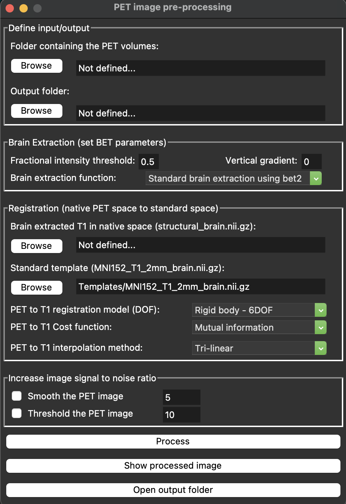

What is OPETIA?
{kind=link}
Cite OPETIA
You are kindly asked to cite the following paper when using OPETIA in your work:
OPETIA Publication in NeuroImage
Thank you!
OPETIA is a user-friendly PET/MRI (Positron Emission Tomography / Magnetic Resonance Imaging) image analysis software, developed using Python for accurate brain image quantification.
OPETIA can be run on: - Windows - Linux Ubuntu - MacOS
OPETIA provides:
Structural (MRI) image processing
Functional (PET) image processing (static or dynamic)
ROI analysis: to calculate SUVR and cortical volume for 115 ROIs
MRIcroGL: for converting DICOM images to nifty images, and also for visualization.
Every tool within OPETIA is provided with the flowchart of the data processing, including the input data and the output data. Additionally, the log box within OPETIA prints the data processing stages for monitoring and error handling.
Supporting Systems:
Windows 11
MacOS
Ubuntu
Input Data:
Static/dynamic PET image
T1-weighted/T2-weighted/Flair MRI image
Output Data:
Separate images for each ROI according to the Harvard-Oxford brain atlas (115 ROIs)
Standardized Uptake Value Ratio (SUVR) for 115 ROIs: mean, min, max
Cerebral Volume for 115 ROIs
OPETIA new release
OPETIA is now a stand-alone software!
The previous version of OPETIA relied on functions from the FSL software for image processing and data analysis. The new version of OPETIA is completely standalone, and therefore, there is no need to have FSL installed anymore. Instead, Python packages, including Ants and Nibabel, have been used for image processing, and Matplotlib for data analysis.
Furthermore, OPETIA can now be run on Windows as well! In addition to macOS and Ubuntu.
The data processing pipeline has NOT changed, and is the same as in the Publication.
In general, what has changed in the new version of OPETIA:
Adding the processing if dynamic PET images. - Using Python packages (Ants, Nibabel, Matplotlib, Numpy) for data processing instead of FSL functions. - Ability to run OPETIA on Windows, macOS, and Ubuntu. - Using one GUI for the whole software, instead of multiple GUIs for every tool. - Adding the MRIcroGL for the image visualization and also DICOM to NIfTI conversion of images. - Adding a log box to print the data processing stages and possible errors. - Adding the data processing pipeline flowchart for more clarity.
What has not changed:
Data processing pipeline and method.
Input and output data structure.
Brain atlas for ROI analysis (Harvard-Oxford brain atlas).
SUVR calculation method.
Volume calculation method.